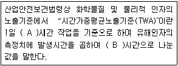
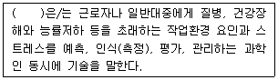
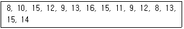
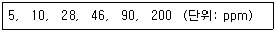
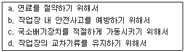
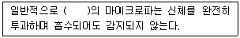
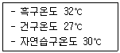
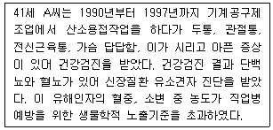

산업위생관리기사 (2020-08-22 기출문제)
1과목: 산업위생학개론
1. 주로 정적인 자세에서 인체의 특정부위를 지속적, 반복적으로 사용하거나 부적합한 자세로 장기간 작업할 때 나타나는 질환을 의미하는 것이 아닌 것은?
- 반복성긴장장애
- 누적외상성질환
- 작업관련성 신경계질환
- 작업관련성 근골격계질환
(정답률: 64%)

2. 육체적 작업 시 혐기성 대사에 의해 생성되는 에너지원에 해당하지 않은 것은?
- 산소(Oxygen)
- 포도당(Glucose)
- 크레아틴 인산(CP)
- 아데노신 삼인산(ATP)
(정답률: 80%)
3. 산업안전보건법령상 발암성 정보물질의 표기법 중 ‘사람에게 충분한 발암성 증거가 있는 물질’에 대한 표기방법으로 옳은 것은?
- 1
- 1A
- 2A
- 2B
(정답률: 86%)
4. 산업안전보건법령상 작업환경측정에 대한 설명으로 옳지 않은 것은?
- 작업환경측정의 방법, 횟수 등의 필요사항은 사업주가 판단하여 정할 수 있다.
- 사업주는 작업환경의 측정 중 시료의 분석을 작업환경측정기관에 위탁할 수 있다.
- 사업주는 작업환경측정 결과를 해당 작업장의 근로자에게 알려야한다.
- 사업주는 근로자대표가 요구할 경우 작업환경측정 시 근로자대표를 참석시켜야 한다.
(정답률: 85%)
5. 온도 25℃, 1기압 하에서 분당 100mL씩 60분 동안 채취한 공기 중에서 벤젠이 5mg 검출되었다면 검출된 벤젠은 약 몇 ppm인가? (단, 벤젠의 분자량은 78이다.)
- 15.7
- 26.1
- 157
- 261
(정답률: 49%)
6. 화학적 원인에 의한 직업성 질환으로 볼 수 없는 것은?
- 정맥류
- 수전증
- 치아산식증
- 시신경 장해
(정답률: 74%)
7. 다음 ( )안에 들어갈 알맞은 것은?

- A : 6, B : 6
- A : 6, B : 8
- A : 8, B : 6
- A : 8, B : 8
(정답률: 77%)
8. 산업위생전문가의 윤리강령 중 “근로자에 대한 책임”에 해당하는 것은?
- 적절하고도 확실한 사실을 근거로 전문적인 견해를 발표한다.
- 기업주에 대하여는 실현 가능한 개선점으로 선별하여 보고한다.
- 이해관계가 있는 상황에서는 고객의 입장에서 관련 자료를 제시한다.
- 근로자의 건강보호가 산업위생전문가의 1차적인 책임이라는 것을 인식한다.
(정답률: 80%)
9. 주요 실내 오염물질의 발생원으로 보기 어려운 것은?
- 호흡
- 흡연
- 자외선
- 연소기기
(정답률: 76%)
10. 산업피로의 종류에 대한 설명으로 옳지 않은 것은?
- 근육의 일부 부위에만 발생하는 국소피로와 전신에 나타나는 전신피로가 있다.
- 신체피로는 육체적 노동에 의한 근육의 피로를 말하는 것으로 근육노동을 할 경우 주로 발생된다.
- 피로는 그 정도에 따라 보통피로, 과로 및 곤비로 분류할 수 있으며 가장 경증의 피로단계는 곤비이다.
- 정신피로는 중추신경계의 피로를 말하는 것으로 정밀작업 등과 같은 정신적 긴장을 요하는 작업 시에 발생된다.
(정답률: 84%)
11. 산업안전보건법령상 사업주가 사업을 할 때 근로자의 건강장해를 예방하기 위하여 필요한 보건상의 조치를 하여야 할 항목이 아닌 것은?
- 사업장에서 배출되는 기계·액체 또는 찌꺼기 등에 의한 건강장해
- 폭발성, 발화성 및 인화성 물질 등에 의한 위험 작업의 건강장해
- 계측감시, 컴퓨터 단말기 조작, 정밀공작 등의 작업에 의한 건강장해
- 단순반복작업 또는 인체에 과도한 부담을 주는 작업에 의한 건강장해
(정답률: 58%)
12. 육체적 작업능력(PWC)이 16kcal/min인 남성 근로자가 1일 8시간 동안 물체를 운반하는 작업을 하고 있다. 이 때 작업대사율은 10kcal/min이고, 휴식 시 대사율은 2kcal/min이다. 매 시간마다 적정한 휴식 시간은 약 몇 분인가? (단, Herting의 공식을 적용하여 계산한다.)
- 15분
- 25분
- 35분
- 45분
(정답률: 70%)
13. Diethyl ketone(TLV=200ppm)을 사용하는 근로자의 작업시간이 9시간일 때 허용기준을 보정하였다. OSHA 보정법과 Brief and Scala 보정법을 적용하였을 경우 보정된 허용기준 치간의 차이는 약 몇 ppm인가?
- 5.⑤
- 11.11
- 22.22
- 33.33
(정답률: 75%)
14. 산업위생의 역사에서 직업과 질병의 관계가 있음을 알렸고, 광산에서의 납중독을 보고한 인물은?
- Larigo
- Paracelsus
- Percival Pott
- Hippocrates
(정답률: 76%)
15. 피로의 예방대책으로 적절하지 않은 것은?
- 충분한 수면을 갖는다.
- 작업 환경을 정리, 정돈한다.
- 정적인 자세를 유지하는 작업을 동적인 작업을 전환하도록 한다.
- 작업과정 사이에 여러 번 나누어 휴식하는 것보다 장시간의 휴식을 취한다.
(정답률: 85%)
16. 직업성 변이(occupational stigmata)의 정의로 옳은 것은?
- 직업에 따라 체온량의 변화가 일어나는 것이다.
- 직업에 따라 체지방량의 변화가 일어나는 것이다.
- 직업에 따라 신체 활동량의 변화가 일어나는 것이다.
- 직업에 따라 신체 형태와 기능에 국소적 변화가 일어나는 것이다.
(정답률: 83%)
17. 생체와 환경과의 열교환 방정식을 올바르게 나타낸 것은? (단, △S: 생체 내 열용량의 변화, M: 대사에 의한 열 생산, E: 수분증발에 의한 열 방산, R: 복사에 의한 열 득실, C: 대류 및 전도에 의한 열 득실이다.)
- △S=M+E±R-C
- TRIANGLES=M-E±R±C
- TRIANGLES=R+M+C+E
- TRIANGLES=C-M-R-E
(정답률: 67%)
18. 작업적성에 대한 생리적 적성검사 항목에 해당하는 것은?
- 체력 검사
- 지능 검사
- 인성 검사
- 지각동작 검사
(정답률: 71%)
19. 다음 ( )안에 들어갈 알맞은 용어는?

- 유해인자
- 산업위생
- 위생인식
- 인간공학
(정답률: 88%)
20. 근로시간 1000시간당 발생한 재해에 의하여 손실된 총 근로 손실일수로 재해자의 수나 발생빈도와 관계없이 재해의 내용(상해정도)을 측정하는 척도로 사용되는 것은?
- 건수율
- 연천인율
- 재해 강도율
- 재해 도수율
(정답률: 65%)
2과목: 작업위생측정 및 평가
21. 분석용어에 대한 설명 중 틀린 것은?
- 이동상이란 시료를 이동시키는데 필요한 유동체로서 기체일 경우를 GC라고 한다.
- 크로마토그램이란 유해물질이 검출기에서 반응하여 띠 모양으로 나타낸 것을 말한다.
- 전처리는 분석물질 이외의 것들을 제거하거나 분석에 방해되지 않도록 하는 과정으로서 분석기기에 의한 정량을 포함한다.
- AAS분석원리는 원자가 갖고 있는 고유한 흡수파장을 이용한 것이다.
(정답률: 57%)
22. 벤젠으로 오염된 작업장에서 무작위로 15개 지점의 벤젠의 농도를 측정하여 다음과 같은 결과를 얻었을 때, 이 작업장의 표준편차는?

- 4.7
- 3.7
- 2.7
- 0.7
(정답률: 53%)
23. 방사선이 물질과 상호작용한 결과 그 물질의 단위질량에 흡수된 에너지(gray; Gy)의 명칭은?
- 조사산량
- 등가선량
- 유효선량
- 흡수선량
(정답률: 73%)
24. 두 개의 버블러를 연속적으로 연결하여 시료를 채취할 때, 첫 번째 버블러의 채취효율이 75%이고, 두 번째 버블러의 채취효율이 90%이면 전체 채취효율(%)은?
- 91.5
- 93.5
- 95.5
- 97.5
(정답률: 64%)
25. 시료채취매체와 해당 매체로 포집할 수 있는 유해인자의 연결로 가장 거리가 먼 것은?
- 활성탄관 - 메탄올
- 유리섬유여과지 - 캡탄
- PVC여과지 - 석탄분진
- MCE막여과지 – 석면
(정답률: 42%)
26. 작업환경측정 및 정도관리 등에 관한 고시상 시료채취 근로자수에 대한 설명 중 옳은 것은?
- 단위작업 장소에서 최고 노출근로자 2명 이상에 대하여 동시에 개인 시료채취 방법으로 측정하되, 단위작업 장소에 근로자가 1명인 경우에는 그러하지 아니하며, 동일 작업근로자수가 20명을 초과하는 경우에는 매 5명당 1명 이상 추가하여 측정하여야 한다.
- 단위작업 장소에서 최고 노출근로자 2명 이상에 대하여 동시에 개인 시료채취 방법으로 측정하되, 동일 작업근로자수가 100명을 초과하는 경우에는 최대 시료채취 근로자수를 20명으로 조정할 수 있다.
- 지역 시료채취 방법으로 측정을 하는 경우 단위작업장소 내에서 3개 이상의 지점에 대하여 동시에 측정하여야 한다.
- 지역 시료채취 방법으로 측정을 하는 경우 단위작업 장소의 넓이가 60평방미터 이상인 경우에는 매 30평방미터마다 1개 지점 이상을 추가로 측정하여야 한다.
(정답률: 64%)
27. 고성능 액체크로마토그래피(HPLC)에 관한 설명으로 틀린 것은?
- 주 분석대상 화학물질은 PCB 등의 유기화학물질이다.
- 장점으로 빠른 분석 속도, 해상도, 민감도를 들 수 있따.
- 분석물질이 이동상에 녹아야 하는 제한점이 있다.
- 이동상인 운반가스의 친화력에 따라 용리법, 치환법으로 구분된다.
(정답률: 41%)
28. 18℃ 770mmHg인 작업장에서 methylethyl ketone의 농도가 26ppm일 때 mg/m3단위로 환산된 농도는? (단, Methylethyl ketone의 분자량은 72g/mol이다.)
- 64.5
- 79.4
- 87.3
- 93.2
(정답률: 54%)
29. 작업장에 작동되는 기계 두 대의 소음레벨이 각각 98dB(A), 96dB(A)로 측정되었을 때, 두 대의 기계가 동시에 작동되었을 경우에 소음레벨(dB(A))은?
- 98
- 100
- 102
- 104
(정답률: 75%)
30. 어떤 작업자에 50% acetone, 30% benzene, 20% xylene의 중량비로 조성된 용제가 증발하여 작업환경을 오염시키고 있을 때, 이 용제의 허용농도(TLV; mg/m3)는? (단, Actone, benzene, xylene의 TVL는 각각 1600, 720, 670mg/m3이고, 용제의 각 성분은 상가작용을 하며, 성분 간 비휘발도 차이는 고려하지 않는다.)
- 873
- 973
- 1073
- 1173
(정답률: 65%)
31. 시간당 약 150kcal의 열량이 소모되는 작업조건에서 WBGT 측정치가 30.6℃일 때 고온의 노출기준에 따른 작업휴식조건으로 적절한 것은?
- 매시간 75% 작업, 25% 휴식
- 매시간 50% 작업, 50% 휴식
- 매시간 25% 작업, 75% 휴식
- 계속 작업
(정답률: 54%)
32. 검지관의 장·단점으로 틀린 것은?
- 측정대상물질의 동정이 미리 되어 있지 않아도 측정이 가능하다.
- 민감도가 낮으며 비교적 고농도에 적용이 가능하다.
- 특이도가 낮다. 즉, 다른 방해물질의 영향을 받기 쉬워 오차가 크다.
- 색이 시간에 따라 변화하므로 제조자가 정한 시간에 읽어야 한다.
(정답률: 71%)
33. MCE여과지를 사용하여 금속성분을 측정, 분석한다. 샘플링에 끝난 시료를 전처리하기 위해 회화용액(ashing acid)을 사용하는 데 다음 중 NIOSH에서 제시한 금속별 전처리 용액 중 적절하지 않은 것은?
- 납 : 질산
- 크롬 : 염산 + 인산
- 카드뮴 : 질산, 염산
- 다성분금속 : 질산 + 과염소산
(정답률: 50%)
34. kata 온도계로 불감기류를 측정하는 방법에 대한 설명으로 틀린 것은?
- kata 온도계의 구(球)부를 50~60℃의 온수에 넣어 구부의 알코올을 팽창시켜 관의 상부 눈금까지 올라가게 한다.
- 온도계를 온수에서 꺼내어 구(球)부를 완전히 닦아내고 스탠드에 고정한다.
- 알코올의 눈금이 100°F에서 65°F까지 내려가는데 소요되는 시간을 초시계로 4~5회 측정하여 평균을 낸다.
- 눈금 하강에 소요되는 시간으로 kata 상수를 나눈 값 H는 온도계의 구부 1cm2에서 1초 동안에 방산되는 열량을 나타낸다.
(정답률: 72%)
35. 실리카겔 흡착에 대한 설명으로 틀린 것은?
- 실리카겔은 규산나트륨과 황산의 반응에서 유도된 무정형의 물질이다.
- 극성을 띠고 흡습성이 강하므로 습도가 높을수록 파과 용량이 증가한다.
- 추출액이 화학분석이나 기기분석에 방해물질로 작용하는 경우가 많지 않다.
- 활성탄으로 채취가 어려운 아닐린, 오르쏘-톨루이딘 등의 아민류나 몇몇 무기물질의 채취도 가능하다.
(정답률: 62%)
36. 작업장에서 어떤 유해물질의 농도를 무작위로 측정한 결과가 아래와 같을 때, 측정값에 대한 기하평균(GM)은?

- 11.4
- 32.4
- 63.2
- 104.5
(정답률: 73%)
37. 접착공정에서 본드를 사용하는 작업장에서 톨루엔을 측정하고자 한다. 노출기준의 10%까지 측정하고자 할 때, 최소시료채취시간(min)은? (단, 작업장은 25℃, 1기압이며, 톨루엔의 분자량은 92.14, 기체크로마토그래피의 분석에서 톨루엔의 정량한계는 0.5mg/m3, 노출 기준은 100ppm, 채취유량은 0.15L/분이다.)(오류 신고가 접수된 문제입니다. 반드시 정답과 해설을 확인하시기 바랍니다.)
- 13.3
- 39.6
- 88.5
- 182.5
(정답률: 49%)
38. 셀룰로오스 에스테르 막여과지에 관한 설명으로 옳지 않은 것은?
- 산에 쉽게 용해된다.
- 중금속 시료채취에 유리하다.
- 유해물질이 표면에 주로 침착된다.
- 흡습성이 적어 중량분석에 적당하다.
(정답률: 65%)
39. 작업장 소음에 대한 1일 8시간 노출 시 허용기준(dB(A))은? (단, 미국 OSHA의 연속소음에 대한 노출기준으로 한다.)
- 45
- 60
- 86
- 90
(정답률: 78%)
40. 코크스 제조공정에서 발생되는 코크스오븐 배출물질을 채취할 때, 다음 중 가장 적합한 여과지는?
- 은막 여과지
- PVC 여과지
- 유리섬유 여과지
- PTFE 여과지
(정답률: 65%)
3과목: 작업환경관리대책
41. 덕트에서 평균속도압이 25mmH2O일 때, 반송속도(m/s)는?
- 101.1
- 50.5
- 20.2
- 10.1
(정답률: 55%)
42. 덕트 합류 시 댐퍼를 이용한 균형유지 방법의 장점이 아닌 것은?
- 시설 설치 후 변경에 유연하게 대처 가능
- 설치 후 부적당한 배기유량 조절가능
- 임의로 유량을 조절하기 어려움
- 설계 계산이 상대적으로 간단함
(정답률: 59%)
43. 송풍기의 송풍량과 회전수의 관계에 대한 설명 중 옳은 것은?
- 송풍량과 회전수는 비례한다.
- 송풍량과 회전수의 제곱에 비례한다.
- 송풍량과 회전수의 세제곱에 비례한다.
- 송풍량과 회전수는 역비례한다.
(정답률: 61%)
44. 동일한 두계로 벽체를 만들었을 경우에 차음효과가 가장 크게 나타나는 재질은? (단, 2000Hz 소음을 기준으로 하며, 공극률등 기타 조건은 동일하다 가정한다.)
- 납
- 석고
- 알루미늄
- 콘크리트
(정답률: 43%)
45. 다음 보기 중 공기공급시스템(보충용 공기의 공급 장치)이 필요한 이유가 모두 선택된 것은?

- a, b
- a, b, c
- b, c, d
- a, b, c, d
(정답률: 70%)
46. 동력과 회전수의 관계로 옳은 것은?
- 동력은 송풍기 회전속도에 비례한다.
- 동력은 송풍기 회전속도의 제곱에 비례한다.
- 동력은 송풍기 회전속도의 세제곱에 비례한다.
- 동력은 송풍기 회전속도에 반비례한다.
(정답률: 66%)
47. 강제환기를 실시할 때 환기효과를 제고하기 위해 따르는 원칙으로 옳지 않은 것은?
- 배출공기를 보충하기 위하여 청정공기를 공급할 수 있다.
- 공기배출구와 근로자의 작업위치 사이에 오염원이 위치하여야 한다.
- 오염물질 배출구는 가능한 한 오염원으로부터 가까운 곳에 설치하여 점환기 현상을 방지한다.
- 오염원 주위에 다른 작업공정이 있으면 공기배출량을 공급량보다 약간 크게 하여 음압을 형성하여 주위 근로자에게 오염물질이 확산되지 않도록 한다.
(정답률: 71%)
48. 점음원과 1m 거리에서 소음을 측정한 결과 95dB로 측정되었다. 소음수준을 90dB로 하는 제한구역을 설정할 때, 제한구역의 반경(m)은?
- 3.16
- 2.20
- 1.78
- 1.39
(정답률: 49%)
49. 층류영역에서 직경이 2㎛이며 비중이 3인 입자상 물질의 침강속도(cm/s)는?
- 0.032
- 0.036
- 0.042
- 0.046
(정답률: 78%)
50. 입자상 물질을 처리하기 위한 공기정화장치로 가장 거리가 먼 것은?
- 사이클론
- 중력집진장치
- 여과집진장치
- 촉매산화에 의한 연소장치
(정답률: 76%)
51. 공기가 흡인되는 덕트관 또는 공기가 배출되는 덕트관에서 음압이 될 수 없는 압력의 종류는?
- 속도압(VP)
- 정압(SP)
- 확대압(EP)
- 전압(TP)
(정답률: 56%)
52. 다음의 보호장구의 재질 중 극성용제에 가장 효과적인 것은?
- Viton
- Nitrile 고무
- Neoprene 고무
- Butyl 고무
(정답률: 74%)
53. 귀덮개 착용 시 일반적으로 요구되는 차음 효과는?
- 저음에서 15dB 이상, 고음에서 30dB 이상
- 저음에서 20dB 이상, 고음에서 45dB 이상
- 저음에서 25dB 이상, 고음에서 50dB 이상
- 저음에서 30dB 이상, 고음에서 55dB 이상
(정답률: 71%)
54. 움직이지 않는 공기 중으로 속도 없이 배출되는 작업조건(예시: 탱크에서 증발)의 제어 속도 범위(m/s)는? (단, ACGIH 권고 기준)
- 0.1 ~ 0.3
- 0.3 ~ 0.5
- 0.5 ~ 1.0
- 1.0 ~ 1.5
(정답률: 58%)
55. 기류를 고려하지 않고 감각온도(effective temperature)의 근사치로 널리 사용되는 지수는?
- WBGT
- Radiation
- Evaporation
- Glove Temperature
(정답률: 78%)
56. 안전보건규칙상 국소배기장치의 덕트 설치 기준으로 틀린 것은?
- 가능하면 길이는 짧게 하고 굴곡부의 수는 적게 할 것
- 접속부의 안쪽은 돌출된 부분이 없도록 할 것
- 덕트 내부에 오염물질이 쌓이지 않도록 이송속도를 유지할 것
- 연결 부위 등은 내부 공기가 들어오지 않도록 할 것
(정답률: 60%)
57. Stokes 침강법칙에서 침강속도에 대한 설명으로 옳지 않은 것은? (단, 자유공간에서 구형의 분진 입자를 고려한다.)
- 기체와 분진입자의 밀도 차에 반비례한다.
- 중력 가속도에 비례한다.
- 기체의 점도에 반비례한다.
- 분진입자 직경의 제곱에 비례한다.
(정답률: 64%)
58. 호흡용 보호구 중 마스크의 올바른 사용법이 아닌 것은?
- 마스크를 착용할 때는 반드시 밀착성에 유의해야 한다.
- 공기정화식 가스마스크(방독마스크)는 방진마스크와는 달리 산소 결핍 작업장에서도 사용이 가능하다.
- 정화통 혹은 흡수통(canister)은 한번 개봉하면 재상용을 피하는 것이 좋다.
- 유해물질의 농도가 극히 높으면 자기공급식장치를 사용한다.
(정답률: 81%)
59. 21℃, 1기압의 어느 작업장에서 톨루엔과 이소프로필알코올을 각각 100g/h씩 사용(증발)할 때, 필요 환기량(m3/h)은? (단, 두 물질은 상가작용을 하며, 톨루엔의 분자량은 92, TLV는 50ppm, 이소프로필알코올의 분자량은 60, TLV는 200ppm이고, 각 물질의 여유계수는 10으로 동일하다.)
- 약 6250
- 약 7250
- 약 8650
- 약 9150
(정답률: 47%)
60. 닥트에서 속도압 및 정압을 측정할 수 있는 표준기기는?
- 피토관
- 풍차풍속계
- 열선풍속계
- 임핀저관
(정답률: 73%)
4과목: 물리적유해인자관리
61. 지적환경(potimum working environment)을 평가하는 방법이 아닌 것은?
- 생산적(productive) 방법
- 생리적(physiological) 방법
- 정신적(psychological) 방법
- 생물역학적(biomechanical) 방법
(정답률: 52%)
62. 감압환경의 설명 및 인체에 미치는 영향으로 옳은 것은?
- 인체와 환경사이의 기압차이 때문으로 부종, 출혈, 동통 등을 동반한다.
- 화학적 장해로 작업력의 저하, 기분의 변환, 여러 종류의 다행중이 일어난다.
- 대기가스의 독성 때문으로 시력장애, 정신혼란, 간질 모양의 경련을 나타낸다.
- 용해질소의 기포형성 때문으로 동통성 관절장애, 호흡곤란, 무균성 골괴사 등을 일으킨다.
(정답률: 52%)
63. 진동의 강도를 표현하는 방법으로 옳지 않은 것은?
- 속도(velocity)
- 투과(transmission)
- 변위(displacement)
- 가속도(acceleration)
(정답률: 61%)
64. 전리방사선의 흡수선량이 생체에 영향을 주는 정도를 표시하는 선당량(생체실효선량)의 단위는?
- R
- Ci
- Sv
- Gy
(정답률: 49%)
65. 실효음압이 2×10-3N/m2인 음의 음압수준은 몇 dB인가?
- 40
- 50
- 60
- 70
(정답률: 61%)
66. 고압 작업환경만으로 나열된 것은?
- 고소작업, 등반작업
- 용접작업, 고소작업
- 탈지작업, 샌드블라스트(sand blast)작업
- 잠함(caisson)작업, 광산의 수직갱내 작업
(정답률: 76%)
67. 다음 ( )안에 들어갈 내용으로 옳은 것은?

- 150MHz 이하
- 300MHz 이하
- 500MHz 이하
- 1000MHz 이하
(정답률: 59%)
68. 저온에 의한 1차적인 생리적 영향에 해당하는 것은?
- 말초현관의 수축
- 혈압의 일시적 상승
- 근육긴장의 증가와 전율
- 조직대사의 증진과 식용항진
(정답률: 52%)
69. 실내 작업장에서 실내 온도 조건이 다음과 같을 때 WBGT(℃)는?

- 30.1
- 30.6
- 30.8
- 31.6
(정답률: 78%)
70. 다음 중 살균력이 가장 센 파장영역은?
- 1800 ~ 2100Å
- 2800 ~ 3100Å
- 3800 ~ 4100Å
- 4800 ~ 5100Å
(정답률: 72%)
71. 고압환경의 인체작용에 있어 2차적 가압현상에 해당하지 않는 것은?
- 산소 중독
- 질소 마취
- 공기 전색
- 이산화탄소 중독
(정답률: 72%)
72. 다음 중 차음평가지수를 나타내는 것은?
- sone
- NRN
- NRR
- phon
(정답률: 66%)
73. 소음성 난청에 대한 내용으로 옳지 않은 것은?
- 내이의 세포 변성이 원인이다.
- 음이 강해짐에 따라 정상인에 비해 음이 급격하게 크게 들린다.
- 청력손실은 초기에 4000Hz 부근에서 영향이 현저하다.
- 소음 노출과 관계없이 연령이 증가함에 따라 발생하는 청력장애를 말한다.
(정답률: 71%)
74. 소음계(sound level meter)로 소음측정 시 A 및 C특성으로 측정하였다. 만약 C특성으로 측정한 값이 A특성으로 측정한 값보다 훨씬 크다면 소음의 주파수영역은 어떻게 추정이 되겠는가?
- 저주파수가 주성분이다.
- 중주파수가 주성분이다.
- 고주파수가 주성분이다.
- 중 및 고주파수가 주성분이다.
(정답률: 57%)
75. 전리방사선 방어의 궁극적 목적은 가능한 한 방사선에 불필요하게 노출되는 것을 최소화 하는 데 있다. 국제방사선방호위원회(ICRP)가 노출을 최소화하기 위해 정한 원칙 3가지에 해당하지 않는 것은?
- 작업의 최적화
- 작업의 다양성
- 작업의 정당성
- 개개인의 노출량의 한계
(정답률: 60%)
76. 현재 총 흡음량이 1200sabins인 작업장의 천장에 흡음물질을 첨가하여 2800sabins을 더할 경우 예측되는 소음감소량(dB)은 약 얼마인가?
- 3.5
- 4.2
- 4.8
- 5.2
(정답률: 64%)
77. 레이노 현상(Raynaud’s phenomenon)과 관련이 없는 것은?
- 방사선
- 국소진동
- 혈액순환장애
- 저온환경
(정답률: 74%)
78. 작업장 내 조명방법에 관한 내용으로 옳지 않은 것은?
- 형광등은 백색에 가까운 빛을 얻을 수 있다.
- 나트륨등은 색을 식별하는 작업장에 가장 적합하다.
- 수은등은 형광물질의 종류에 따라 임의의 광색을 얻을 수 있다.
- 시계공장 등 작은 물건을 식별하는 작업을 하는 곳은 국소조명이 적합하다.
(정답률: 56%)
79. 럭스(lux)의 정의로 옳은 것은?
- 1m2의 평면에 1루멘의 빛이 비칠 때의 밝기를 의미한다.
- 1촉광의 광원으로부터 한 단위 입체각으로 나가는 빛의 밝기 단위이다.
- 지름이 1인치되는 촛불이 수평방향으로 비칠 때의 빛의 광도를 나타내는 단위이다.
- 1루멘의 빛이 1ft2의 평면상에 수직방향으로 비칠 때 그 평면의 빛의 양을 의미한다.
(정답률: 61%)
80. 유해한 환경의 산소결핍 장소에 출입 시 착용하여야 할 보호구와 가장 거리가 먼 것은?
- 방독마스크
- 송기마스크
- 공기호흡기
- 에어라인마스크
(정답률: 79%)
5과목: 산업독성학
81. 유해물질의 생리적 작용에 의한 분류에서 질식제를 단순 질식제와 화학적 질식제로 구분할 때 화학적 질식제에 해당하는 것은?
- 수소(H2)
- 메탄(CH4)
- 헬륨(He)
- 일산화탄소(CO)
(정답률: 72%)
82. 화학물질 및 물리적 인자의 노출기준에서 근로자가 1일 작업시간동안 잠시라도 노출되어서는 아니 되는 기준을 나타내는 것은?
- TLV-C
- TLV-skin
- TLV-TWA
- TLV-STEL
(정답률: 79%)
83. 생물학적 모니터링을 위한 시료가 아닌 것은?
- 공기 중 유해인자
- 요 중의 유해인자나 대사산물
- 혈액 중의 유해인자나 대사산물
- 호기(exhaled air)중의 유해인자나 대사산물
(정답률: 72%)
84. 흡인분진의 종류에 의한 진폐증의 분류 중 무기성 분진에 의한 진폐증이 아닌 것은?
- 규폐증
- 면폐증
- 철폐증
- 용접공폐증
(정답률: 69%)
85. 3가 및 6가 크롬의 인체 작용 및 독성에 관한 내용으로 옳지 않은 것은?
- 산업장의 노출의 관점에서 보면 3가 크롬이 6가 크롬보다 더 해롭다.
- 3가 크롬은 피부 흡수가 어려우나 6가 크롬은 쉽게 피부를 통과한다.
- 세포막을 통과한 6가 크롬은 세포내에서 수 분 내지 수 시간 만에 발암성을 가진 3가 형태로 환원된다.
- 6가에서 3가로의 환원이 세포질에서 일어나면 독성이 적으나 DNA의 근위부에서 일어나면 강한 변이원성을 나타낸다.
(정답률: 69%)
86. 다음 중 만성중독 시 코, 폐 및 위장의 점막에 병변을 일으키며, 장기간 흡입하는 경우 원발성 기관지암과 폐암이 발생하는 것으로 알려진 대표적인 중금속은?
- 납(Pb)
- 수은(Hg)
- 크롬(Cr)
- 베릴륨(Be)
(정답률: 67%)
87. 독성물질 생체내 변환에 관한 설명으로 옳지 않은 것은?
- 1상 반응은 산화, 환원, 가수분해 등의 과정을 통해 이루어진다.
- 2상 반응은 2상 반응이 불가능한 물질에 대한 추가적 축합반응이다.
- 생체변환의 기전은 기존의 화합물보다 인체에서 제거하기 쉬운 대사물질로 변화시키는 것이다.
- 생체 내 변환은 독성물질이나 약물의 제거에 대한 첫 번째 기전이며, 1상 반응과 2상 반응으로 구분된다.
(정답률: 57%)
88. 다음 중금속 취급에 의한 대표적인 직업성 질환을 연결한 것으로 서로 관련이 가장 적은 것은?
- 니켈 중독 – 백혈병, 재생불량성 빈혈
- 납 중독 – 골수침입, 빈혈, 소화기장해
- 수은 중독 – 구내염, 수전증, 정신장해
- 망간 중독 – 신경염, 신장염, 중추신경장해
(정답률: 67%)
89. 다음 중 가스상 물질의 호흡기계 축적을 결정하는 가장 중요한 인자는?
- 물질의 농도차
- 물질의 입자분포
- 물질의 발생기전
- 물질의 수용성 정도
(정답률: 62%)
90. 중금속에 중독되었을 경우에 치료제로 BAL이나 Ca-EDTA 등 금속배설 촉진제를 투여해서는 안되는 중금속은?
- 납
- 비소
- 망간
- 카드뮴
(정답률: 68%)
91. 산업안전보건법령상 석면 및 내화성 세라믹 섬유의 노출기준 표시단위로 옳은 것은?
- %
- ppm
- 개/cm3
- mg/m3
(정답률: 80%)
92. 피부독성 반응의 설명으로 옳지 않은 것은?
- 가장 빈번한 피부반응은 접촉성 피부염이다.
- 알레르기성 접촉피부염은 면역반응과 관계가 없다.
- 광독성 반응은 홍반·부종·착색을 동반하기도 한다.
- 담마진 반응은 접촉 후 보통 30~60분 후에 발생한다.
(정답률: 74%)
93. 산업안전보건법령상 사람에게 충분한 발암성 증거가 잇는 물질(1A)에 포함되어 있지 않은 것은?
- 벤지딘(Benzidine)
- 베릴륨(Beryllium)
- 에틸벤젠(Ethyl benzene)
- 염화 비닐(Vinyl chloride)
(정답률: 42%)
94. 단백질을 침전시키며 thiol(-SH)기를 가진 효소의 작용을 억제하여 독성을 나타내는 것은?
- 수은
- 구리
- 아연
- 코발트
(정답률: 70%)
95. 동물을 대상으로 약물을 투여햇을 때 독성을 초래하지는 않지만 대상의 50%가 관찰 가능한 가역적인 반응이 나타나는 작용량을 무엇이라 하는가?
- LC50
- ED50
- LD50
- TD50
(정답률: 62%)
96. 이황화탄소(CS2)에 중독될 가능성이 가장 높은 작업장은?
- 비료 제조 및 초자공 작업장
- 유리 제조 및 농약 제조 작업장
- 타르, 도장 및 석유 정제 작업장
- 인조견, 셀로판 및 사염화탄소 생산 작업장
(정답률: 67%)
97. 다음 사례의 근로자에게서 의심되는 노출인자는?

- 납
- 망간
- 수은
- 카드뮴
(정답률: 50%)
98. 유기용제의 중추신경 활성억제의 순위를 큰 것에서부터 작은 순으로 나타낸 것 중 옳은 것은?
- 알켄＞알칸＞알코올
- 에테르＞알코올＞에스테르
- 할로겐화합물＞에스테르＞알켄
- 할로겐화합물＞유기산＞에테르
(정답률: 72%)
99. 다음 입자상 물질의 종류 중 액체나 고체의 2가지 상태로 존재할 수 있는 것은?
- 흄(fume)
- 증기(vapor)
- 미스트(mist)
- 스모크(smoke)
(정답률: 66%)
100. 벤젠을 취급하는 근로자를 대상으로 벤젠에 대한 노출량을 추정하기 위해 호흡기 주변에서 벤젠 농도를 측정함과 동시에 생물학적 모니터링을 실시하였다. 벤젠 노출로 인한 대사산물의 결정인자(determinant)로 옳은 것은?
- 호기 중의 벤젠
- 소변 중의 마뇨산
- 소변 중의 총페놀
- 혈액 중의 만델리산
(정답률: 63%)